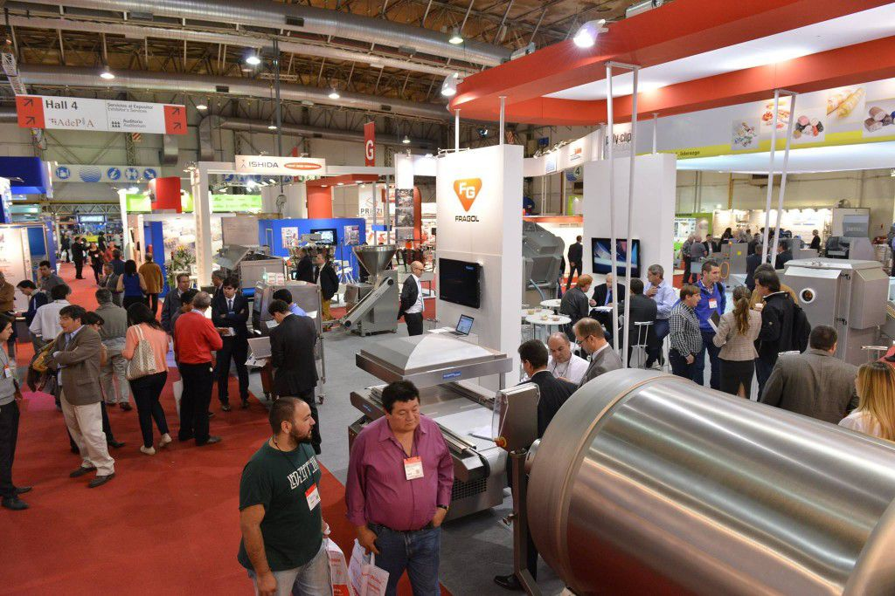
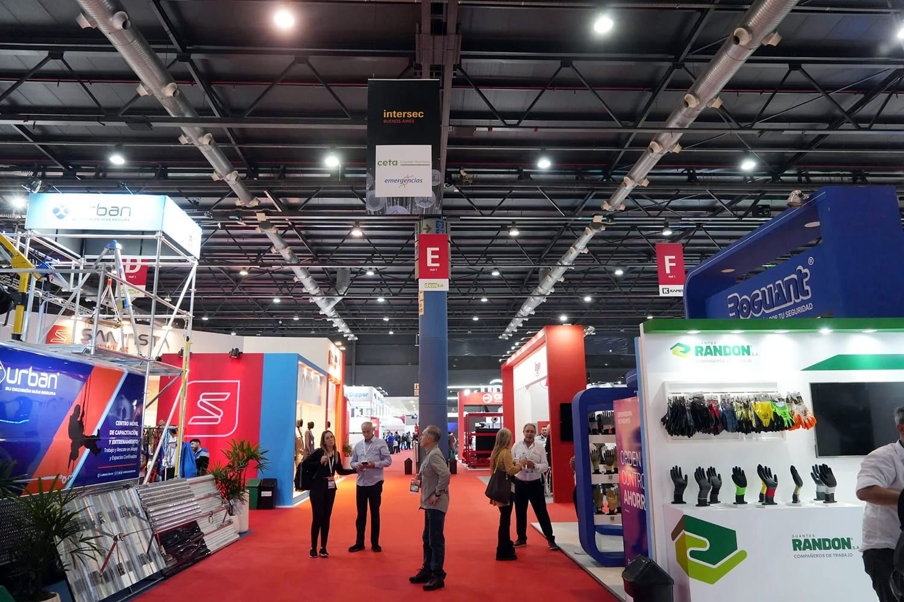

Buenos Aires, el corazón de la industria ferial argentina
La ciudad se consolida como el principal centro de negocios de la región, albergando la gran mayoría de las exposiciones nacionales. De acuerdo a las fuentes, se han programado 21 eventos feriales en total: 13 de ellos se llevarán a cabo en 2026, mientras que otros 8 ya están confirmados para el cronograma de 2027. Los encuentros tendrán lugar en sedes de prestigio como La Rural, el Centro Costa Salguero, el Hilton Buenos Aires y Expoagro.
Fechas clave y diversidad de sectores
Si bien la actividad es constante, el mayor movimiento se espera para el segundo semestre de 2026, con un pico de actividad en los meses de agosto y septiembre. La oferta es sumamente variada y abarca 15 temáticas principales:
¿Cuáles son las ferias más grandes del calendario de Buenos Aires?
Tecno Fidta 2026
Exposición internacional de la industria alimentaria, una de las más importantes de América Latina.

InterSec Buenos Aires 2026
Exposición especializada en seguridad, la de mayor convocatoria del calendario.

Guía para expositores: ¿Cómo participar?
Para aquellas empresas interesadas en formar parte de estas ferias comerciales, el proceso comienza visitando la página web oficial de cada evento de interés. Sitios como EXPOSALE.net permiten enviar solicitudes preliminares de participación para facilitar el ingreso de nuevos expositores a las ferias de la ciudad. Es recomendable realizar estas gestiones con antelación debido al alto volumen de participantes que manejan estas exposiciones internacionales.
Para más información sobre fechas de las próximas ferias: exposale.net